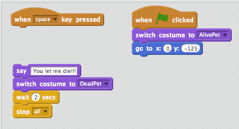
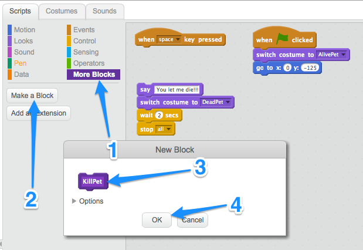
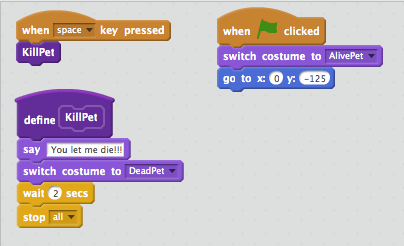
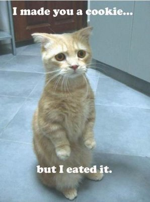
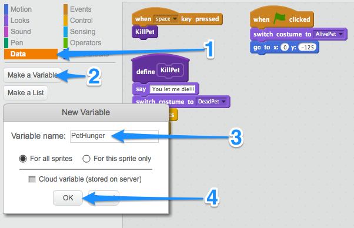

A Virtual LOLcat in Scratch
Table of Contents
1 Using functions
Learn It
- Open up the
Virtual_LOL_Catscript you were working on last lesson. - Functions are really important in coding.
- A funtion is a named part of a program that performs some specific task
- In Scratch, Functions are called Blocks.
- Imagine I wanted you to make me a cheese sandwich. I could give you a set of instructions such as:
- Take two pieces of bread.
- Apply butter to one side of each piece
- Place a slice of cheese on the butter side of one piece of bread.
- Place the other slice of bread, butter-side down onto the cheese.
- However, it's much easier to just say "Make me a cheese sandwich" as you probably already have the instructions stored in your memory. You have a named instruction for performing the sandwich making task
- Functions allow us to write some code, and then run that code just by calling the name of the function.
Code It
- Killing the pet is something we might want to do quite a lot. So it would make sense to create a Function for killing the pet, that we can use over and over again.
- First we'll need to disconnect the code to kill the pet, from the
when space key pressedevent.

- Next we'll create a new function.
- Click on
More Blocks - Click on
Make a Block - Call it
KillPet - Click on
OK
- Click on

- A new
define KillPetblock should have been created. This is your named function that you can attach your code to. - Now we'll use the function
- Attach your code to kill the pet to the new
define KillPetblock. - From
More Blocksdrag yourKillPet blockonto the Scripts Area - Attach the
KillPetblock to thewhen space key pressedevent
- Attach your code to kill the pet to the new

Run It
- Test your code to make sure it works like it did before. The pet should die when the space key is pressed.
2 Using variables
Learn It
- Variables are another important concept in programming.
- A variable is made up of two things:
- Some data that is stored (like numbers or letters)
- A name that links to that data.
- You have variables stored in your memory, even though you might not have realised it.
- If I ask you what your name is, you can tell me. Your
nameis a variable. - If I ask you what your age is, you can tell me. Your
ageis a variable. - A key thing to remember about variables, is that they can change. You could legally change your name to "Ima Coder", and your age increments by 1 every time you have a birthday.
Code It

- We're going to use a variable to represent how hungry our pet is.
- The variable will have a name -
PetHunger - The variable will store some data - 0 to represent no hunger, upto 100 to represent starving.
- Click on the Data palate
- Click on
Make a variable - Call it
PetHunger - Click
OK

- To finish off this section, you'll need to create a new script to handle the PetHunger.
- Add a new
when greenflag clickedevent. - Attach a
set PetHunger to 0block beneath it. We'll add more to this part in the next lesson.
Try It
- We're going to need some more variables for our virtual pet, so we might as well create them now.
- Create variables to for
PetTiredness,PetThirstandPetHappiness. - Each variable needs it's own
when green flag clickedevent. PetTirednessshould start at 0.PetThirstshould also start at 0.PetHappinessshould start at 100.
3 Using loops
Learn It
- Loops are the third fundamental concept in porgramming to learn today.
- A loop causes instructions to be repeated over and over again.
- There are basically two types of loop
- Loops that repeat a set number of times
- Loops that repeat until a condition is met.
- Imagine someone was giving directions. They might say something like;
At the next four roundabouts take the second exit to go straight on.
- This is a loop that repeats four times. You take the second exit at each roundabout exactly 4 times.
- They might have said this instead though;
Keep taking the second exit at the roundabouts, until you go under the blue bridge.
- This loop repeats an unknown number of times, until the you go under the bridge.
- In Scratch these types of loop are called the
repeatand therepeat untilloops.
Code It
- We're going to use a
repeat untilto make our pet get hungry. - In Scratch you nest the code you want to repeat, insite the loop block.
- Here's the complete script code. You build it from the script you already have to set the Pet's Hunger to 0
when green flag clicked
set PetHunger to 0
repeat until PetHunger = 100
change PetHunger by 1
wait 0.1 secs
KillPet
- This code can be tricky to assemble, so if you want to see an image of the completed script, then click here, but have a go at doing it yourself first.
Run It
- Run your script to make sure that it works.
- You should see the PetHunger variable increase on the stage.
- When it reaches 100, the pet should die.
- If it doesn't work then go back over the instructions, then ask a friend and finally ask your teacher for help.
- For testing purposes, we've used a wait period of 0.1 secomds. But this isn't really practical for the real Virtual Pet. Change the wait time to something longer. You can choose any value you like.
4 Explaining it all
Badge It
- To get your badge for this section, you're going to need to create a new Scratch file.
- Create an animation where a character explains the concepts of Functions, Variables and Loops to someone who has never heard of the terms. Try to come up with your own examples.
- How clear the explanation is will determine whether you are awarded a Silver, Gold or Platinum badge.
- You will have only one lesson to work on this, so don't make it too complicated.